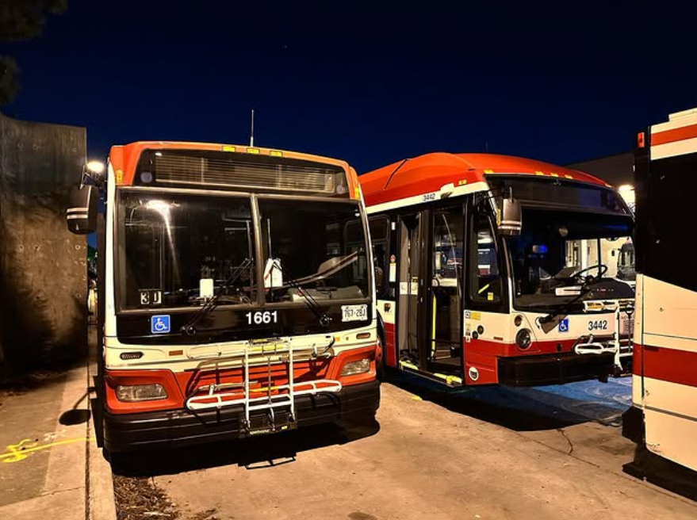

|
Wesley Martin Lugolobi Hello, my name is Wesley Lugolobi and I am an apsiring Information Technology student, studying at York University in hopes of making a change within Transportation in Toronto. I also am currently working on some photography and videography projects, which I present to you here: TTC7945 on Instagram All based in the Greater Toronto Area, where I showcase my journey within the transportation workforce. I am currently at Freelance 3D Modeller and Programmer on many platforms, mainly ROBLOX Studio as I specialize in Lua. Toronto Transit Commission - Community.
|

Here is a photo of a 2007 Orion 07.501 Next Generation Hybrid Electric Vehicle & a 2018 NovaBUS Low Floor Series Hybrid Electric Vehicle sitting in the maintenance bay at Malvern Garage, located at Markham and Sheppard Avenue East.
 Here is a photo of me and the former Chief Executive Officer of the Toronto Transit Commsision, Richard Leary (Rick Leary) at the 2023 Toronto Transit Commission - Community event at the Toronto Transit Commission - Hillcrest Complex.
Here is a photo of me and the former Chief Executive Officer of the Toronto Transit Commsision, Richard Leary (Rick Leary) at the 2023 Toronto Transit Commission - Community event at the Toronto Transit Commission - Hillcrest Complex.
|
{kind=link}